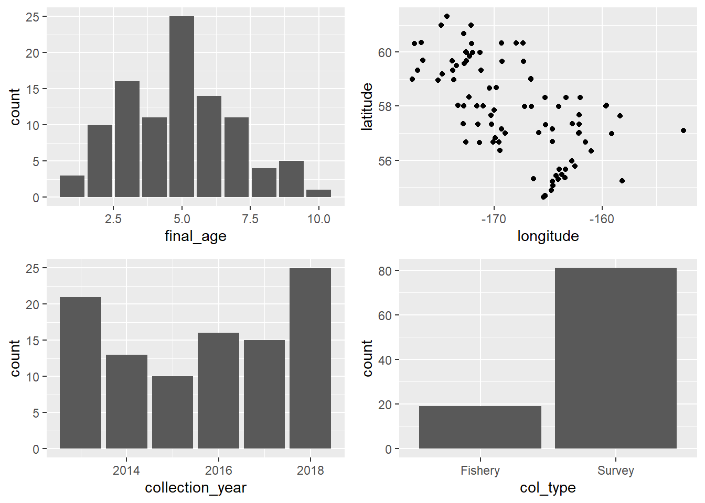
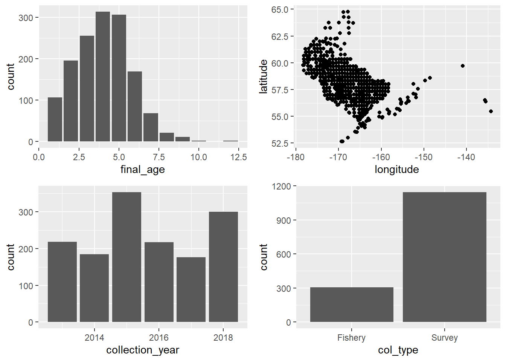

Best practices for selecting a PLS model calibration data set to optimize predictive accuracy - for Pacific cod
This section of the simulation project is to evaluate best practices for selecting a model calibration data set. Rigorous calibration sample selection is important to evaluate and optimize the predictive capability of PLS models used to estimate fish age from the near infrared spectra of their otoliths. First, I explore three different approaches for selecting calibration samples to evaluate relative predictive capability of PLS models, and then I evaluate optimal sample size for calibration data sets. Here, this is done for Pacific cod.
1. Comparing three approaches to select calibration samples
Methods
I started with the full Bering Sea Pacific cod spectral data set (survey and fishery) from the years 2013-2018. I pre-processed all data with Savitzky-Golay (1st derivative, 17-points) which is our standard pre-processing method.
I filtered out data affected by the stray light correction issue that had been scanned between June 2021 - May 2022. I then performed outlier detection and removal based on orthogonal distances (Q) and score distances (Hotelling T^2) past critical limits.
I split the data into two data sets. One data set (hereinafter referred to as the double read data set) had all double read data (n = 2,292), and the all other data set had just a single read age (hereinafter referred to as “hold out” data) (n = 7,933).
I then evaluated three different methods for selecting calibration models from the double read data set 1) the agree ages approach: I used just the spectra from otoliths where both the reader and tester agreed on the age. This is based on the assumption that these specimens have the least error in reference ages. 2) Random selection approach: I randomly selected a subset of data for the calibration model. This has been somewhat status quo. 3) Kennard-Stone algorithm approach: I used the Kennard-Stone aglorithm to select representative samples that encompass the full range of spectral variation in our data set.
Agree ages approach
When selecting a subset of data for a calibration sample via random sample, there are many different possible combinations depending on the total sample size. Some combinations may, based on random chance, be better or worse at predicting future samples than others. To encompass this range, I resampled with replacement from the specimens where the reader and tester agreed on age (n = 1448) to make 100 simulated data sets. I made 200 paired validation data sets which included any samples in the double read data set not included in each calibration data set. I then fit a model to each calibration set and used it to predict age for each paired validation set (200 models total). I then calculated mean absolute error of the predicted ages vs. reference ages in each validation set to evaluate the predictive accuracy of the model. This resulted in 200 mean absolute error values.
Random selection approach
To evaluate the random selection approach for selecting calibration samples, I resampled with replacement from the full double read data set (n = 2292) but with an n = 1448 to be equivalent to the agree ages approach. This was to eliminate variation in model performance due to different calibration sample sizes. This resulted in 100 simulated data sets. I made 200 paired validation data sets which included any samples in the double read data set not included in each calibration data set. I then fit a model to each calibration set and used it to predict age for the paired validation set (200 models total). I calculated mean absolute error of the predicted ages vs. reference ages in each validation set which resulted in 200 mean absolute error values.
Kennard-stone algorithm approach
To evaluate the Kennard-Stone algorithm for selecting calibration samples, I resampled with replacement from the full double read data set (n = 2292) to generate 200 simulated datasets. I then applied the Kennard-Stone algorithm to each simulated data set to select calibration sets with an n = 1448 to be equivalent to the agree ages approach and the random selection approach. This resulted in 200 simulated calibration sets. I made 200 paried validations sets which included any samples in the double read data set not included in each calibration data set. I then fit a PLS model to each calibration set and used it to predict age for the paired validation set (200 models total). I calculated mean absolute error of the predicted ages vs. reference ages in each validation set which resulted in 200 mean absolute error values.
Figure 1. Violin plots (kernal density) comparing mean absolute errors between the three calibration selection approaches.
Application to hold out data set
I then applied the sample calibration sets selected via each method above to the hold out data set (n = 7,933). This was to simulate using a calibration model on “new” incoming data to evaluate performance. Each approach has 200 calibration models fit on 200 simulated data sets that are each being used to predict ages for the hold out data set.
Figure 2. Violin plots (kernal density) comparing mean absolute errors between the three calibration selection approaches used to predict ages for the hold out data set. Mean absolute error for each calibration-validation pair are shown as points.
Results
The results of this simulation suggest that model predictive accuracy (represented by mean absolute error) can vary depending on what samples are included in the model calibration set. Different approaches to selecting these samples have different considerations.
When models were fit to each simulated calibration data set (each n = 1,448) and used to predict age fo each paired validation set from the double read data set (n = 2,292), the agree ages approach resulted in the lowest predictive accuracy (higher mean absolute error) that the random approach or the Kennard-Stone algorithm (Figure 1). This may be because unlike the random approach or Kennard-Stone approach, the agree ages approach was not able to draw samples from the full double-read data set and therefore was not able to resample any data sets with representation from the full range of variation.
However, when the same calibration models were used to predict fish ages for the full hold-out data set (n = 7,933), each approach for selecting calibration samples had a comparable range of prediction accuracies. This may be because no calibration samples were drawn from this hold out data set and therefore none of the approaches were able to have an “advantage” by encompassing a wider range of variation. This suggests that in the first case, the Kennard-Stone and random approach may therefore be over-representing their advantage on model predictive accuracy on a truly unseen data set.
When selecting calibration samples using the agree ages approach or the random approach, you run the risk of randomly selecting samples that will not create a robust calibration model in terms of predictive ability on new data (Figure 1 and 2). The Kennard-Stone algorithm is an approach to selecting a calibration data set that is reproducible. However, as shown here, it can still only predict “future” unseen data as well as the original data set it was applied to. The benefit is you do not risk selecting a poor calibration sample by random chance, and you know you are selecting a calibration sample that represents the full range of variation in the data set (age, collection year, etc.).
2. Evaluating minimum sample size for robust calibration sets
Methods
I used the same data set as above. To evaluate the minimum sample size for a robust calibration model, I applied the same methods as above to evaluate the three different methods for calibration selection but also varied calibration sample sizes from 100 to 1448 (intervals of 500, might increase freq).
Application to paired validation sets from double read data
I applied the sample calibration sets selected via each method at each sample size to their paired validation set from the double read data (n = 2292). This was to simulate evaluating a calibration model’s predictive accuracy in a proof-of-concept study. Each approach has 200 calibration models fit on 200 simulated data sets at each sample size.
Figure 3. Violin plots (kernal density) comparing mean absolute errors between three calibration selection approaches to predict ages for each paired validation set. This is shown for calibration sample sizes 100 - 1448 at intervals of 500. Each have 200 iterations.
Application to a hold out data set
I then applied the sample calibration sets selected via each method and each sample size to the hold out data set (n = 7,933). This was to simulate using a calibration model on “new” incoming data to evaluate performance. Each approach has 200 calibration models fit on 200 simulated data sets at each sample size that are each being used to predict ages for the hold out data set.
Figure 4. Violin plots (kernal density) comparing mean absolute errors between three calibration selection approaches to predict ages for the hold out data set. This is shown for calibration sample sizes 100 - 1448 at intervals of 500. Each has 200 iterations.
Results
- Not much gain over n=500
- At the lowest sample size (n=100) in both proof-of-concept study and when applied to a hold out data set: the kennard-stone approach has the most variation in performance and the agree age approach has the least. Why??
- For sample sizes equal to or greater than 500, the kennard-stone approach resulted in higher predictive performance on average in proof-of-concept studies when able to “see” all data. However, when calibration models from all approaches were applied to a hold out data set, methods were fairly comparable in their predictive performance and kennard-stone did not outperform the agree ages or the random selection approaches. This suggests that when kennard-stone is used in proof-of-concept studies and used to draw from the full data set to select a calibration set, one may be over-fitting one’s model and getting overly optimistic results. Better to do CV or something.
- Guidance for sample sizes 500 or greater, if doing proof-of-concept, do CV to get a better idea of predictive ability. If choosing a calibration set for future predictions on incoming data, use Kennard-Stone.
- Guidance for sample sizes less than 500 (?? need help with how to interpret)
3. Exploring characteristics of best and worst calibration sets (n=100)
We compared characteristics including age distribution, spatial distribution, collection year, and collection type (survey vs. fishery) between the best performing model calibration data set (that had the highest predictive accuracy on the hold out data set) and the worst performing model calibration data set (had the lowest predictive accuracy on the hold out data set).
Agree age selection method
Best calibration set - age distribution, spatial distribution, collection type (fishery vs. survey) (n=100)
Worst calibration sets - age distribution, spatial distribution, collection year, collection type (n=100)
Random selection method
Best calibration set - age distribution, spatial distribution, collection year, collection type (survey vs. fishery) (n=100)
Worst calibration sets - age distribution, spatial distribution, collection year, collection type (survey vs. fishery) (n=100)
Kennard-Stone selection method
Best calibration sets - age distribution, spatial distribution, collection year, collection type (survey vs. fishery) (n=100)

Worst calibration sets - age distribution, spatial distribution, collection year, collection type (survey vs. fishery) (n=100)
4. Exploring characteristics of best and worst calibration sets (n=1,448)
We compared characteristics including age distribution, spatial distribution, collection year, and collection type (survey vs. fishery) between the best performing model calibration data set (that had the highest predictive accuracy on the hold out data set) and the worst performing model calibration data set (had the lowest predictive accuracy on the hold out data set).
Agree age selection method
Best calibration set - age distribution, spatial distribution, collection type (fishery vs. survey) (n=1,448)
Worst calibration sets - age distribution, spatial distribution, collection year, collection type (survey vs. fishery) (n=1,148)
Random selection method
Best calibration set - age distribution, spatial distribution, collection year, collection type (survey vs. fishery) (n=1,448)
Worst calibration sets - aage distribution, spatial distribution, collection year, collection type (survey vs. fishery) (n=1,448)
Kennard-Stone selection method
Best calibration sets - age distribution, spatial distribution, collection year, collection type (survey vs. fishery) (n=1,448)
Worst calibration sets - age distribution, spatial distribution, collection year, collection type (survey vs. fishery) (n=1,448)
